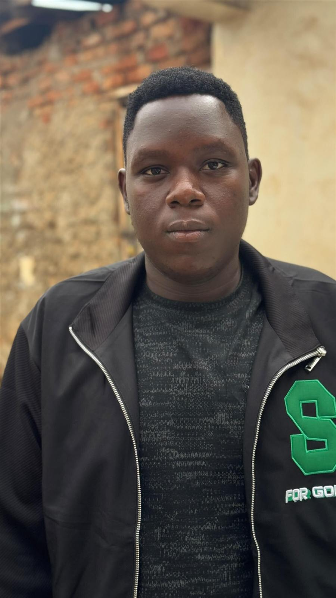

Musimbi Joel | WDD 130

Hello everyone! My name is Musimbi Joel. I am a student at BYU, and I am just starting my WDD 130 course. I enjoy learning new things and improving my skills. I am interested in web design and development because I like technology and creating new things. I look forward to learning more, completing my studies at BYU, and using my skills in the future.